Note: On Windows 10 Mobile, the settings are not being saved. This is a known issue and I am working with Microsoft on a fix. I do not yet have an ETA. Sorry for the inconvenience!
WiFi Scale Tracker is a Windows Phone application for tracking your weight as
measured by a
Withings WiFi Body Scale, written by Dan Crevier. This application is not
usable without such a scale and requires you to use your my.withings.com
account. It supports the following features:
- Metro style UI
- Shows most recent
weight in pounds
- Shows daily,
weekly and monthly trends based on simple linear regression
- Can show all
weight measurements
- Supports pounds
and kilograms
- Displays BMI
- High and low
weights
- Share weight on
social networks
- Displays graph of
weight over time
- Pinch zoom to change range
- Drag to pan the graph
- Double tap to zoom out
- Tap and hold to see measurement values
Version 1.4 adds the
following:
- BMI support
- Added ability to
share weight
- Performance and
stability improvements
- Does not need to
be online to show cached data
Version 1.3 adds the
following:
- New Metro-style
UI
- Clicking on the
current weight display shows all of the raw weight measurements
- Clicking on the
daily, weekly or monthly trends will show bar graphs by day, week or month.
The standard graph is still accessible through the application bar.
Version 1.2 adds the
following:
- Support for kg
- Mango fast resume
- Fixes issues in
sign in flow for some users
- Visual cleanup,
including moving user selection to settings
- Miscellaneous bug
fixes
If you run into any problems or have feature requests, please contact me at
wfstsupport@hotmail.com.
These are the features I'm looking at for future releases:
- Tracking of fat mass (in % or kg/lbs)
- Live tile updates
- Goal tracking